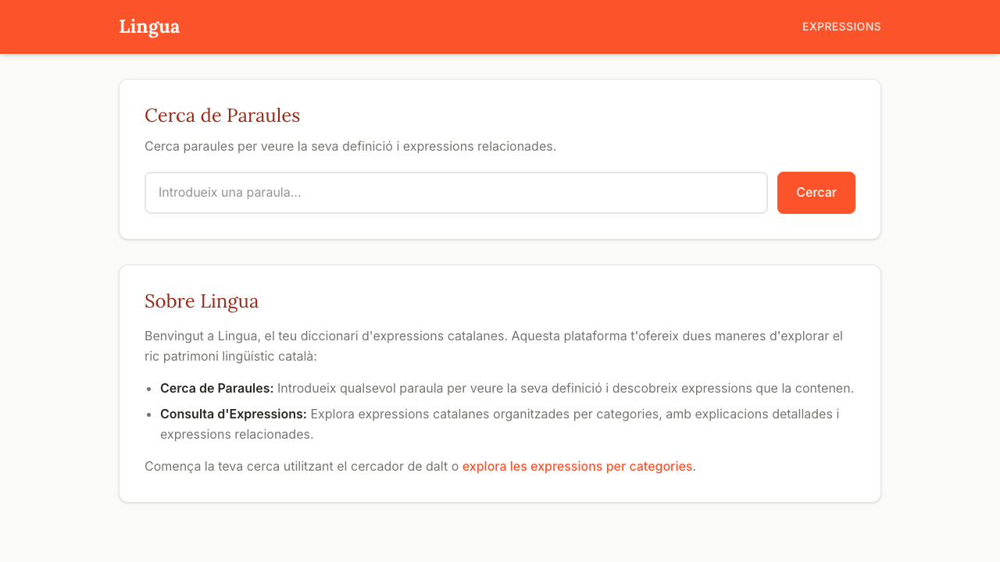
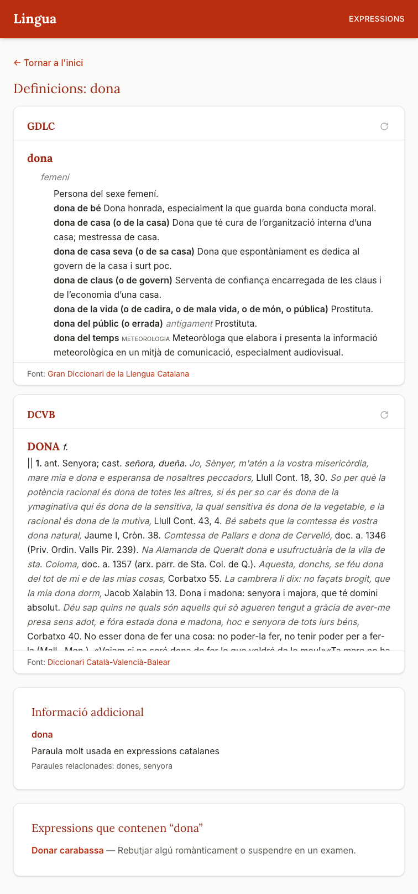
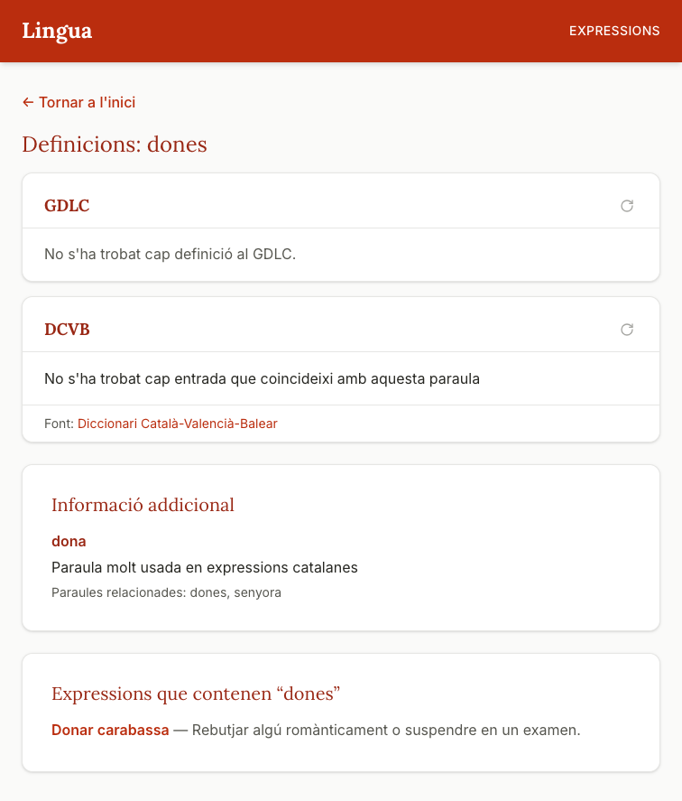
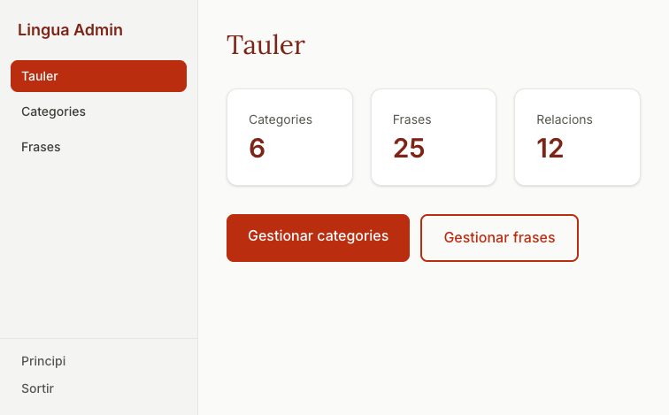
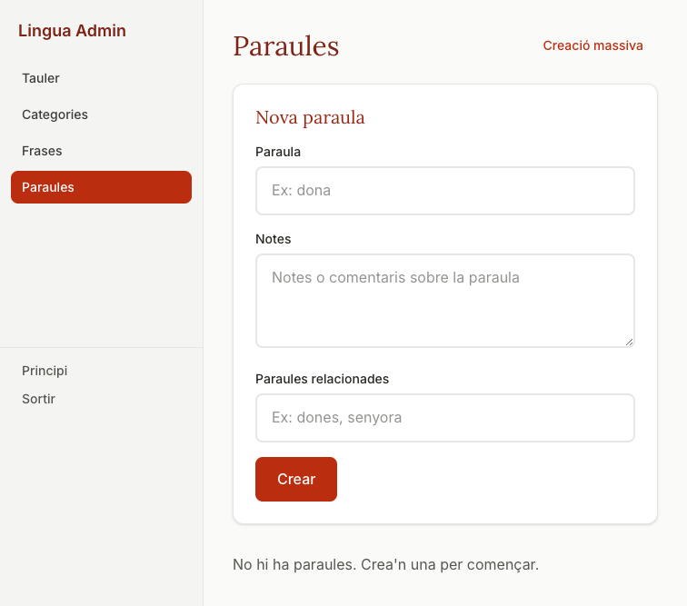
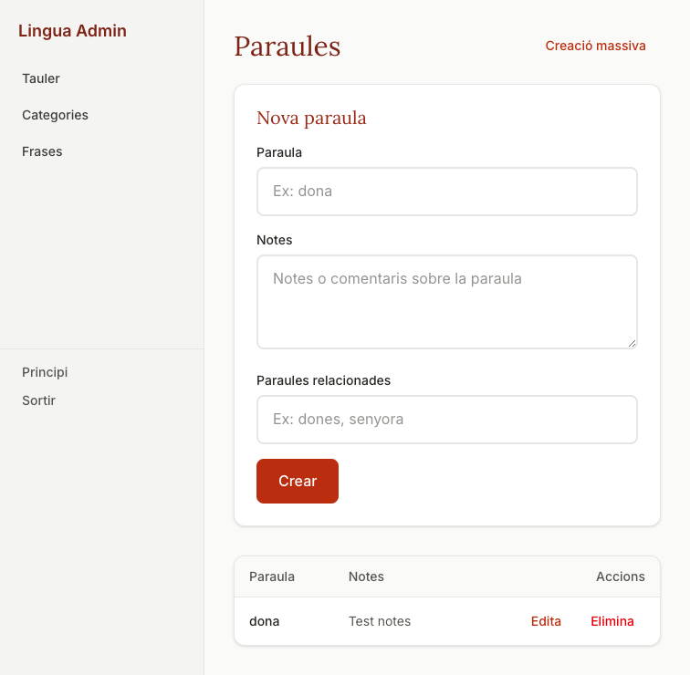
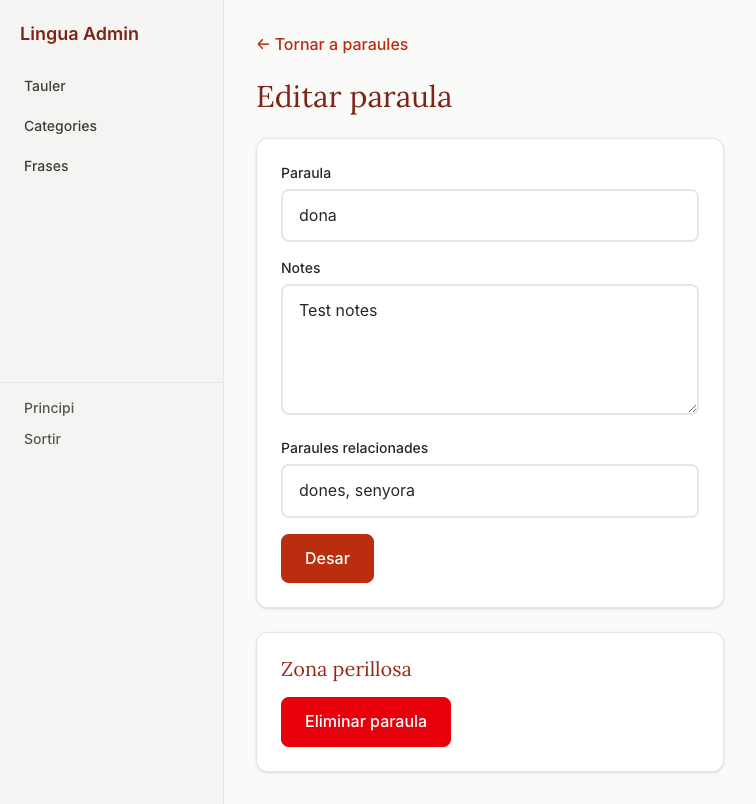
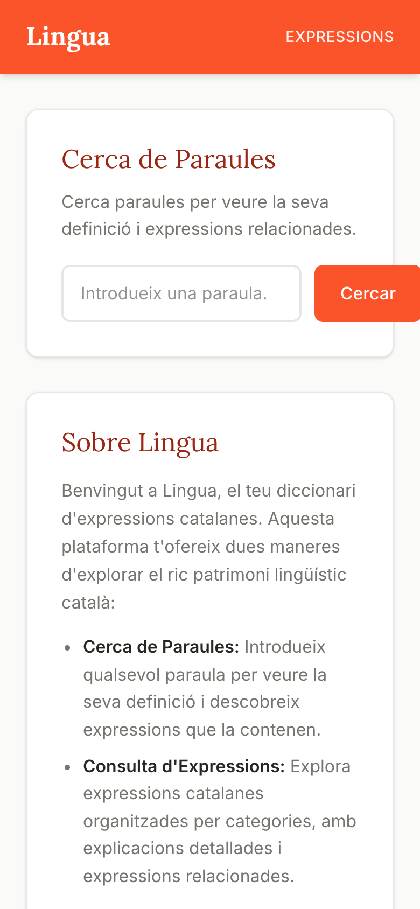

A Catalan phrase dictionary, built (almost) entirely by AI
The Project
A web app for exploring Catalan phrases and idioms — with dictionary definitions, categories, and full-text search.

Before Writing Code
The stack wasn't chosen by one AI — it evolved through conversations with multiple LLMs.
First conversation: described the project goals. Gemini recommended 3 stack options — SvelteKit + PostgreSQL FTS, a dedicated search engine (Meilisearch), or a graph DB (Neo4j). Went with Option 1 for simplicity.
Second conversation: asked for a minimum PWA example with Konsta UI (mobile-native component library). Got a working scaffold — but later dropped Konsta UI in favor of a simpler custom Tailwind design system, since PWA already handles installability.
With the stack decided, Claude Code took over for the entire build — from design system to production deployment. Claude also researched within its domain: FTS config for Catalan, Neon driver setup, PostHog integration.
Under the Hood
SvelteKit 2 + Svelte 5 with runes, TailwindCSS v4 with a custom vermillion design system, PWA-installable
PostgreSQL 16 with Catalan full-text search, Drizzle ORM, dual-driver setup (Docker locally, Neon serverless in prod)
Vercel deployment, PostHog analytics, GitHub Actions CI with a11y testing (axe-core + Lighthouse)
Stack chosen via Gemini research conversations, then fully implemented by Claude Code. The Catalan language requirement drove key decisions — PostgreSQL FTS needed a custom config since no built-in Catalan dictionary exists.
The Workflow
Claude wrote most of the code: components, server routes, database schemas, seed scripts, build configs. I reviewed, tested, and directed.
When multiple options existed (e.g., FTS approach, auth strategy, Neon driver setup), Claude researched trade-offs and presented recommendations with reasoning.
Every major feature started with a plan: Claude drafted step-by-step implementation plans that we refined together before writing any code.
Plans act as living documentation — they capture decisions, deviations, and gotchas discovered during implementation.
From Zero to Production
The project started as a barebones SvelteKit app with hardcoded static data, no styling, no database. Claude took it to a production-ready state in a single plan with 9 steps:
Guardrails for AI
One of the first things Claude built was a full design system with dedicated pages (/design-system & /sistema-disseny). This wasn't just documentation — it became a constraint system for the AI itself.
bg-brand, not a random hex colorprimary-500 to primary-700 — and everything updated automaticallyVermillion/terracotta — primary-50 through primary-900
Lora for headings
Inter for body text and UI elements
Project Timeline
Each milestone was a separate Claude conversation with its own plan.
Design system, DB, FTS, PWA, analytics, deploy
Password-protected CRUD for categories, phrases, relations
ESLint, Prettier, a11y fixes, mobile responsiveness
Meta tags, sitemap, JSON-LD, Lighthouse 100, CI pipeline
New entity, FTS integration, admin CRUD
~4 weeks from static prototype to a fully-featured, production-grade app — with one person and an AI assistant.
The App Today

Word search with dictionary definitions + metadata

FTS stemming: "dones" matches "dona"

Admin panel dashboard
Content Management

Word creation with related words

CRUD listing with actions

Edit form with danger zone
Mobile-First & Beyond
The app was designed to work on mobile from the start. Instead of a native app wrapper like Konsta UI (initially considered), we went with a pure PWA approach — installable, offline-capable, and lighter to maintain.
Claude built a full icon generation pipeline: a single SVG source → scripts/generate-icons.ts produces all PNG sizes + favicon. Then we wrapped the entire flow (icons + screenshots) into a reusable Claude skill (/refresh-pwa-assets) for one-command regeneration.
Claude used a Puppeteer MCP server to launch a real browser, navigate the running app, take screenshots, and verify changes visually — all within the same conversation. This closed the feedback loop: code → run → see → fix.
Model Context Protocol servers extend Claude's capabilities. Instead of just reading/writing files, Claude can control a browser, interact with APIs, or use any custom tool — enabling real end-to-end testing during development.

The Ecosystem
Claude Code is more than a chat — it's an extensible agent with plugins, tools, and custom automations.
Puppeteer MCP — Launch browsers, navigate pages, click elements, take screenshots. Used for live visual testing and PWA screenshot generation.
PostHog, Linear, Datadog... — MCP servers can connect Claude to any external service via a standard protocol.
/refresh-pwa-assets — Custom skill: regenerate all icons from SVG + take desktop & mobile screenshots via Puppeteer. One command, full pipeline.
/commit, /code-review — Built-in skills for git workflows. Claude drafts commit messages, reviews diffs, opens PRs.
Plans & CLAUDE.md — Structured plans for multi-step features. Project instructions that persist context across sessions.
Web search & fetch — Research docs, check APIs, read external content. Used for PostHog setup, Neon driver docs, Tailwind v4 migration.
The extensibility model means Claude can adapt to your workflow rather than the other way around.
Developer Experience
Most of Lingua was built using the VS Code extension. Here's how they compare.
// shortcuts)Developer Experience
An autonomous development loop: give Claude a prompt, let it work, and when it finishes — feed it the same prompt again. It sees its own changes and iterates until done.
A 6-commit plan — new DB table, FTS triggers, search integration, full admin CRUD, nav updates. The loop ran through all steps, committing after each phase.
Developer Experience
Despite the prompt asking to test everything, the first steps were not properly verified before moving on. Had to stop the loop and intervene to ask Claude to actually test what it built.
Was running in dangerous mode (auto-approve all). After stopping to fix testing, the mode silently reset. Left the loop running overnight — it got stuck waiting for an edit approval that never came.
Small UI bugs remained: related words not showing in list, form not resetting after edit, toast position, CI workflow needed updating.
Don't say "test everything." Add explicit validation checkpoints per phase in the plan: what to verify, how to verify it, and what success looks like. Claude needs concrete criteria or it will rush to the next step.
Lessons Learned
Starting with a plan keeps Claude focused and gives you a shared reference. It also captures deviations and gotchas — invaluable for future sessions.
The project instructions file (CLAUDE.md) is what makes Claude productive across sessions. Conventions, gotchas, and architecture decisions all live here.
Claude is fast but not infallible. Code review is still necessary — especially for security (auth), edge cases, and making sure the generated code matches your mental model.
Claude shines at scaffolding new features end-to-end. It's less effective when debugging subtle issues in existing code it didn't write.
I brought the idea, the language expertise, and the product vision. Claude brought the implementation speed. That combination is powerful.
As CLAUDE.md grew and conventions solidified, each session was more productive. Claude made fewer mistakes because it had more context.
What's Next
The next feature opens Lingua to its users — allowing anyone to propose new phrases and word metadata, with admin approval.
Questions?